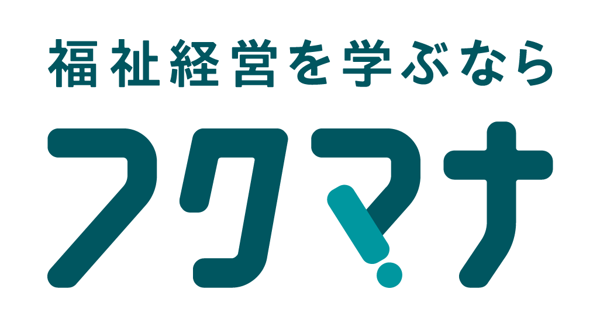

福祉経営 学びタイプ診断
経営視点を磨くマネージャータイプ
現場と経営を、数字でつなぐ人。
現場をよく知るあなたが経営の数字を読めるようになると、提案や説明の説得力が大きく変わります。決算書や事業の収支を理解することは、職員と法人の両方を守る力になります。

福祉経営 学びタイプ診断
現場と経営を、数字でつなぐ人。
現場をよく知るあなたが経営の数字を読めるようになると、提案や説明の説得力が大きく変わります。決算書や事業の収支を理解することは、職員と法人の両方を守る力になります。